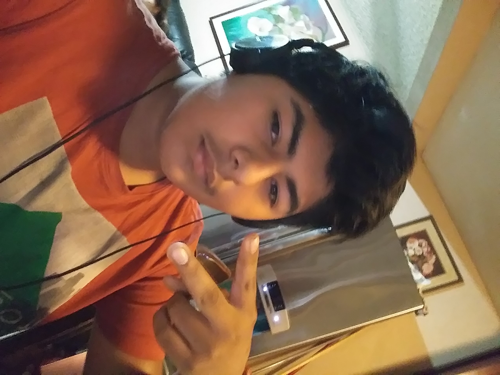

About Me

One of my hobbies that i've had for a while is playing videogames. I play them almost everywhere nowadays since I can download games on my phone. I play story based games, multiplayer games, single player games, building games, and the occasional rpg. I spend a good amount of my day on games but I won't play most games if my friends aren't playing such as fortnite or Pub G.
Another one of my hobbies is that I like going out to places with my family. I enjoy those little times I have with my family once in a while on the weekends. We go out to eat, to the mall, the park, or we go visit other family members. I mostly enjoy time with my two sisters because I can do whatever I normally do with friends with my sisters. My older sister takes my and/or my younger sister to amusement parks, places to eat, and tyhe occasional shoping center.
Google
Cool Math Games
Youtube